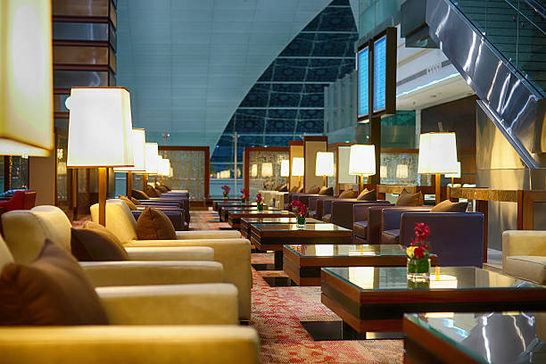
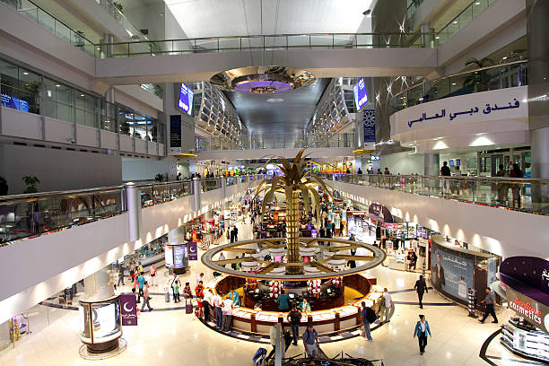
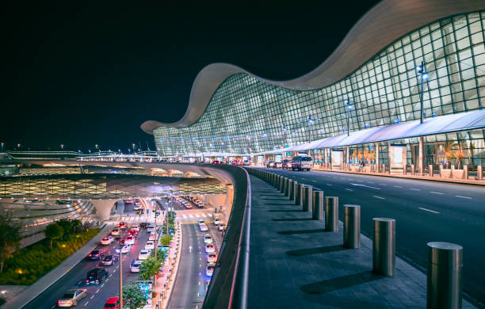
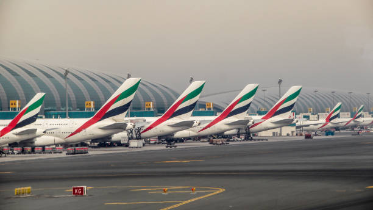
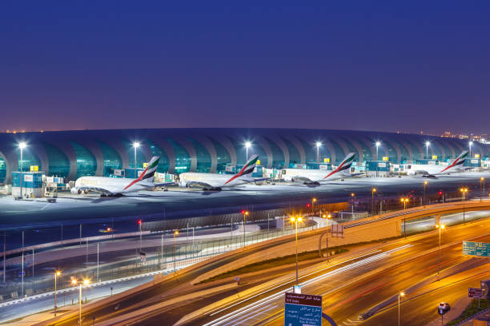
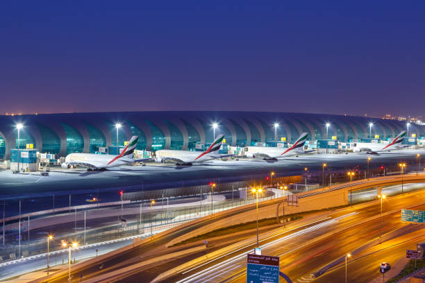
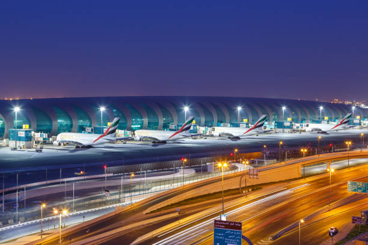

Nová budova medzinárodného letiska v Dubaji, otvorená v roku 2001, je jedným z najväčších leteckých uzlov na svete s ročnou kapacitou 80 miliónov ľudí. Unikátne letisko zahŕňa tri terminály pre cestujúcich a dva nákladné terminály, ako aj výstavné a kvetinové centrum. Dubajské letisko je známe aj širokou ponukou butikov a zábavy. Pre mladších cestujúcich sú tu atrakcie vrátane trampolín a lezeckých stien, vďaka ktorým je čakanie na lety menej únavné.
Fakty o letisku
- Dubajské letisko (DXB) má jedno z najrýchlejších a najpohodlnejších Wi-Fi pripojení na svete, milióny cestujúcich cestujúcich na tomto letisku môžu byť vždy pripojení.
- Keďže ide o jedno z najrušnejších letísk na svete, letiskové terminály sú niekedy preplnené. A tak sa uprostred tejto obrovskej masy cestujúcich a bezcolných obchodov nachádza priestor, kde je obrovská zenová záhrada pre cestujúcich, ktorí si chcú oddýchnuť.
- Letisko Dubaj poskytuje cestujúcim aj širokú škálu služieb. Patria sem obchodné centrá pre tých, ktorí potrebujú miesto na prácu, zasadacie miestnosti a sekretárske služby.
- Hoci lietadlo A380 prevádzkovalo viac ako tucet leteckých spoločností na celom svete, dubajská spoločnosť Emirates bola jediným dopravcom, ktorý do tohto lietadla investoval veľké prostriedky.
- Je tiež sídlom najväčšieho svetového prevádzkovateľa pozemnej obsluhy Dnata, ktorý pôsobí na mnohých letiskách po celom svete.
- Okrem päťhviezdičkového letiskového hotela a klubov a kúpeľov má letisko aj viac ako tucet salónikov vo všetkých troch termináloch.
Najlepšie fotografie letiska:




 

